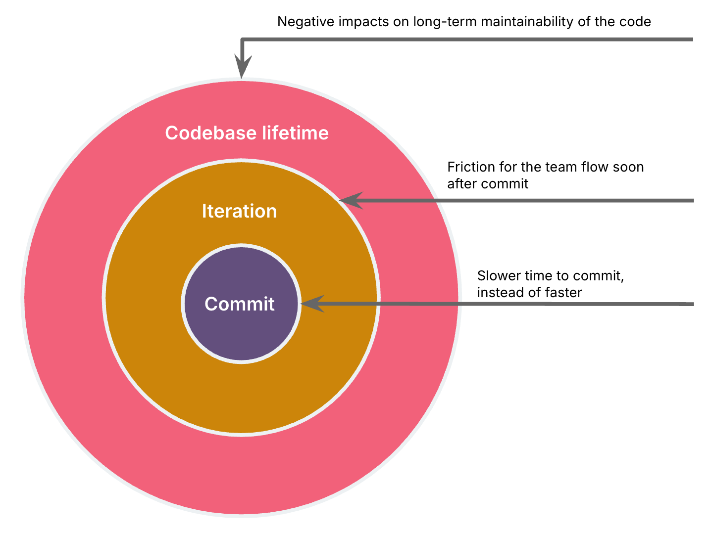
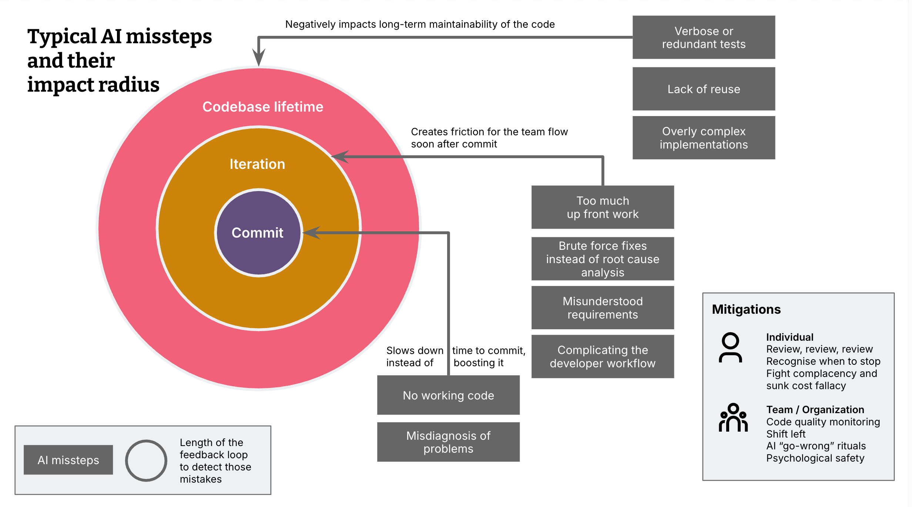

代理式編碼助理（agentic coding assistants）能力越來越強，各方反應差異很大。有人從近期的進展往外推，斷言「再過一年，我們就不需要開發者了。」也有人擔心 AI 生成程式碼的品質，以及該怎麼為這個變動中的環境培養初階開發者。
過去幾個月，我固定使用 Cursor、Windsurf 與 Cline 的代理模式，幾乎都用在改動既有程式庫（而不是從零寫一個井字遊戲）。整體來說，IDE 整合近來的進展讓我印象很深，這些整合也大幅放大工具能給我的協助。它們會：
- 執行測試與其他開發任務，並試著立刻修掉發生的錯誤
- 自動發現並試著修正 lint 與編譯錯誤
- 能做網路研究
- 有些甚至有瀏覽器預覽整合，可以捕捉 console 錯誤或檢查 DOM 元素
這些都讓我與 AI 有過很精采的協作過程，有時幫我在極短時間內寫出功能、釐清問題。
然而。
即使在那些成功的過程裡，我也一直在介入、修正、引導。很多時候我甚至決定乾脆不提交那些變更。這份備忘錄要列出我實際引導過的具體案例，說明在這種「受監督的代理（supervised agent）」模式下，開發者的經驗與技能扮演什麼角色。這些案例顯示，儘管進展驚人，距離 AI 能自主為非瑣碎任務寫程式還很遠。它們也提示了在可預見的未來，開發者仍得用上哪些技能。那些技能是我們必須保留、必須訓練的。
我不得不介入的地方（Where I’ve had to steer）
先說清楚：AI 工具在我下面列出的這些事情上，一律都很糟。有些案例甚至只要多給提示或加上自訂規則就能輕易緩解。是緩解，不是完全控制：LLM 常常不照提示的字面走。編碼工作階段拖得越長，就越時靈時不靈。所以我列出的這些事，無論提示寫得多嚴謹、編碼助理整合了多少脈絡提供者（context provider），發生的機率都絕對不可忽略。
我把案例依影響半徑（impact radius）分成三類，也就是 AI 的失誤會：
a. 拖慢我的開發速度與提交時間，而不是加快（相較於沒有輔助的寫程式方式），或
b. 在那次迭代中對團隊流程造成摩擦，或
c. 對程式碼的長期可維護性造成負面影響。
影響半徑越大，團隊要抓到這些問題的回饋週期就越長。

影響半徑：提交時間（Impact radius: Time to commit）
這些是 AI 阻礙我多於幫助我的情況。這其實是最不成問題的影響半徑，因為它是最明顯的失敗模式，這些變更很可能根本不會進入提交。
程式碼跑不起來（No working code）
有時候就是非得我介入，程式碼才能運作，沒別的原因。我的經驗之所以派上用場，要嘛是我能很快修正出錯的地方，要嘛是我很早就知道該放棄，然後開一個新的 AI 工作階段，或自己動手解決。
誤判問題（Misdiagnosis of problems）
AI 誤判問題時，很常一頭鑽進死胡同。這種時候我往往能靠過去遇過同類問題的經驗，把工具從死胡同邊緣拉回來。
範例：它認定一個 Docker 建置問題出在該次建置的架構設定，並依此改了設定。但實際上，問題來自複製了為錯誤架構建置的 node_modules。這種問題我遇過很多次，所以馬上就抓出來並導正方向。
影響半徑：迭代中的團隊流程（Impact radius: Team flow in the iteration）
這一類講的是缺乏審查與介入，導致團隊在該次交付迭代中出現摩擦。我在許多交付團隊工作過的經驗，讓我在提交前就能修正這些問題，因為這些二階效應（second order effects）我碰過很多次。我想就算有 AI，新進開發者也一樣會掉進這些坑、再從中學到教訓，就像我當年一樣。問題在於：AI 帶來的寫程式吞吐量提升，會不會把這件事放大到團隊無法永續吸收的程度。
前期投入太多（Too much up-front work）
AI 常常一次做很廣，而不是逐步實作出能運作的功能切片。這可能在還沒發現某個技術選擇不可行、或某項功能需求被誤解之前，就白白浪費大量前期工作。
範例：在一次前端技術棧遷移任務中，它想一次轉換所有 UI 元件，而不是先從一個元件與一條能與後端整合的垂直切片（vertical slice）開始。
暴力解法而非根本原因分析（Brute-force fixes instead of root cause analysis）
AI 有時用暴力法解決問題，而不是先診斷真正的原因。這會把根本問題延到更後面的階段，也丟給其他團隊成員，而他們得在缺少原始變更脈絡的情況下自行分析。
範例：Docker 建置時遇到記憶體錯誤，它直接調高記憶體設定，而不是先問為什麼會用到那麼多記憶體。
把開發者工作流搞複雜（Complicating the developer workflow）
有一次，AI 產生的建置工作流讓開發體驗變得很糟。這些變更若幾乎立刻推上去，會影響其他團隊成員的開發流程。
範例：跑一個應用的前端與後端變成要下兩個指令，而不是一個。
範例：沒有確保 hot reload 能運作。
範例：複雜的建置設定，把我和 AI 自己都搞糊塗了。
範例：處理 Docker 建置錯誤時，沒考慮到這些錯誤其實可以在建置流程更早的階段就攔下。
需求被誤解或理解不完整（Misunderstood or incomplete requirements）
有時我沒把功能需求描述清楚，AI 就會跳到錯誤的結論。要抓到這點並把代理導回正軌，未必需要特別的開發經驗，專心就夠了。但這種情況我碰得很頻繁，也正好說明全自主代理在沒有開發者盯著、沒有在一開始就介入的情況下，會怎麼失敗（介入的時機是開頭，不是結尾）。不管是哪一種情況，是開發者沒跟著思考，還是代理完全自主，這個誤解都會在故事生命週期（story lifecycle）的後段才被抓到，然後來回往返一大堆，才把工作修正回來。
影響半徑：長期可維護性（Impact radius: Long-term maintainability）
這個影響半徑最陰險，因為回饋週期最長，這些問題可能要好幾週、好幾個月後才被抓到。這類情況是：程式碼現在跑得好好的，未來卻更難改。可惜這也是我 20 多年程式經驗影響最大的一類。
冗長又重複的測試（Verbose and redundant tests）
AI 很會產生測試，但我經常發現它會新增測試函式，而不是在既有測試裡加斷言；或者加了太多斷言，其中一些其他測試早就涵蓋了。對經驗較少的程式設計者來說，這有違直覺：測試多不一定好。測試與斷言重複得越多，就越難維護，測試也越脆弱。這可能導致一種狀態：開發者一改動程式碼的某個部分，好幾個測試就失敗，徒增額外負擔與挫折。我試過用自訂指示緩解這種行為，但它還是經常發生。
缺乏重用（Lack of reuse）
AI 產生的程式碼有時缺乏模組化，很難把同一套做法套用到應用裡的其他地方。
範例：沒發現某個 UI 元件在別處已經實作過，於是產生重複的程式碼。
範例：使用行內 CSS 樣式，而不是 CSS class 與變數。
過度複雜或冗長的程式碼（Overly complex or verbose code）
有時 AI 產生的程式碼太多，我得手動移除多餘的部分。這些可能是技術上不必要、卻讓程式碼更複雜的內容，未來改動時就會出問題；也可能是我當下根本不需要的額外功能，白白增加不必要的維護成本。
範例：每次 AI 幫我改 CSS，我之後都得一條一條移除有時數量龐大的重複 CSS 樣式。
範例：AI 產生了一個能在 JSON 物件裡動態顯示資料的新 web component，但它蓋了一個非常繁複的版本，而那個時間點根本不需要。
範例：重構時，它沒認出既有的依賴注入鏈，引入了多餘的參數，讓設計更脆弱、更難理解。例如它對某個 service 建構子加了一個不必要的參數，而提供該值的依賴其實早就注入過了。（value = service_a.get_value(); ServiceB(service_a, value=value)）
結論（Conclusions）
這些經驗讓我不敢想像我們會在一年內擁有能自主寫出 90% 程式碼的 AI，一點都不敢。那它能不能協助寫出 90% 的程式碼？也許吧。對某些團隊、某些程式庫可以。今天它協助我處理 80% 的情況（在一個中等複雜、約 15K 行的相對小型程式庫裡）。

你可以怎麼防範 AI 的失誤？（What can you do to safeguard against AI missteps?）
那麼，你要怎麼保護你的軟體與團隊，不受這些以 LLM 為後盾的工具反覆無常所害，同時又享受 AI 編碼助理的好處？
個別程式設計者（Individual coder）
永遠仔細審查 AI 產生的程式碼。我很少遇到完全找不到東西修或改的情況。
當你覺得狀況已經超出負荷，就停掉 AI 編碼工作階段。看是要修訂提示、開一個新工作階段，還是回到手動實作，也就是我同事 Steve Upton 說的「手工編碼（artisanal coding）」。
對「夠好了」的解法保持警覺：它們奇蹟般地在極短時間內誕生，卻帶來長期的維護成本。
實踐結對程式設計（pair programming）。四隻眼睛比兩隻看得多，兩個腦袋也比一個不容易自滿。
團隊與組織（Team and organization）
老派的程式碼品質監控。如果你還沒建，就架設 Sonarqube 或 Codescene 這類工具來提醒程式碼異味（code smells）。它們雖然不能抓到全部，卻是安全網裡很好的一塊。有些程式碼異味在 AI 工具下變得更明顯，應該比以前更密切監控，例如程式碼重複。
pre-commit hook 與 IDE 內建的程式碼審查。記得盡可能向左移（shift-left）：有很多工具會在 pull request 或 pipeline 階段審查、lint 與做安全檢查。但能在開發當下抓到的越多越好。
重新檢視良好的程式碼品質實務。有鑑於這裡描述的這類坑，以及團隊遇到的其他坑，建立一些儀式來反覆強調可緩解外層兩種影響半徑的做法。例如你可以維護一份「出錯紀錄（Go-wrong log）」，記下 AI 產生的程式碼導致團隊摩擦或影響可維護性的事件，每週回顧一次。
善用自訂規則。多數編碼助理現在都支援設定規則集或指示，每次提示都會一併送出。你可以把它當成團隊的工具，反覆調整基準提示指示，把你良好的實務寫成規則，緩解這裡列出的一些失誤。不過，如開頭所說，AI 完全不保證會遵循它們。工作階段越大、脈絡視窗越大，就越時靈時不靈。
信任與開放溝通的文化。我們正處於過渡階段，這項技術嚴重衝擊了我們的工作方式，每個人都是初學者、都是學習者。有信任文化與開放溝通的團隊與組織，更有能力學習並面對這帶來的脆弱感。例如，一個對團隊施加高度壓力、要他們「因為現在有 AI 了」而加快交付的組織，就更容易暴露在這裡提到的品質風險中，因為開發者可能為了達成期待而抄近路。反之，在高信任與心理安全感團隊裡的開發者，會更容易分享自己在採用 AI 上的困難，也讓團隊學得更快，把工具的效益發揮到最大。
感謝 Dr. Cat Hicks 暢談工具的好用程度如何深受所處環境影響。也感謝 Jim Gumbley、Karl Brown、Jörn Dinkla、Matteo Vaccari 與 Sarah Taraporewalla 的回饋與意見。
最新文章（9 月 2 日）：An Accidental Blackboard